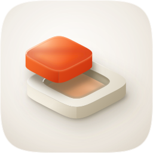
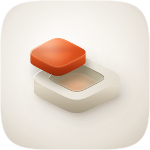
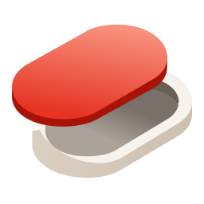
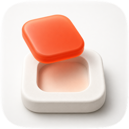
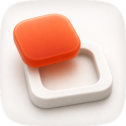

build_icon.py, the raster takes carried four porcelain-register exemplars from corpus/apple-2026/ as reference images, and the shipping master was then closed against the winning raster through the skill's own measured fidelity loop.| Take | Renders at 128 / 32 / 16 css px (2× retina sources), plus the 16px squint magnified | Rubric | Verdict |
|---|---|---|---|
| A · icon.svgEngine A, hand-authored layered SVG, fidelity round 8, SHIPS |
 |
11 / 12 | Four real layers over a cushion tile, so identity rides on shape and value and survives Dark, Clear and Tinted by construction. The cast tile and the mould cavity are the marketplace's exact superellipse, not an approximation of it, so the artwork contains the shape it makes at three scales. Checks 1–4 verified on these renders, not imagined. Point deducted at #7: the dominant gel measures 2.72:1 against the local porcelain, under the 3:1 bar, though grayscale separation is a comfortable 99 levels. |
| A‑r00 · candidate-r00.svgthe same master before the fidelity loop, kept for the diff |
 |
9 / 12 | The first draft, already built on the material recipes rather than flat. It lost on two counts the loop then measured away. #2: the group sat 13% too small and too high, so the composition read as an object stranded in a large empty tile. #4: at 16px the plaster block was within a few luminance points of its own ground and simply vanished, leaving an orange lozenge with nothing under it. Kept on the sheet because the before/after is the argument for the loop. |
| B · icon-engineB-arrow-626f04.svgEngine B, Arrow 1.1 vector from the spec-as-brief |
 |
3 / 12 | The clear loser, failing seven checks. It emitted a 150×130.4 viewBox, so it is not square artwork at all and had to be fitted rather than stretched to appear here honestly (#1, #2). Both superellipses became soft lozenges, which takes the whole idea with them: solid and void are only legible as the same shape twice when the shape is specific (#3). A hard grey interior shadow z-fights the dish rim and the red slab floats with no contact at all (#8), the material is flat vector with no gel cues (#9), and there are no named layer groups (#10). Nothing was salvaged geometrically. Its one contribution is a negative control: it proved the exact superellipse is load-bearing rather than decorative. |
| C2 · icon-engineC-fe8278-2-masked.pngEngine C raster, GPT Image 2, corpus-referenced, the material target |
 |
9 / 12 | Won the material read outright and became the fidelity reference. Its cavity is the best-realised element anywhere in the set: a bright plaster floor holding a pooled peach bounce that pales toward the near rim, which is the whole signature stated in one gradient. It cannot ship. #10, the corpus's highest-leverage failure, is what a flat pre-masked raster IS. #9 also goes: the ground is dead-flat white with no cushion, no inner rim and no vignette, which the Tahoe grammar names as the previous era's tell. #2 goes on focal size, at roughly 78% of the tile. |
| C1 · icon-engineC-27539d-masked.pngEngine C raster, second take, material control |
 |
9 / 12 | The strongest 16px read in the set, and it lost the reference slot anyway. Its cavity has no visible floor, so the mould reads as a hollow frame and the negative stops being a negative of anything, which costs the concept more than the extra mass buys. Same structural failures as C2 at #9 and #10, and #2 is worse at roughly 85% of the tile with the block running to the frame. Its measured contribution was the gel chroma: sampling it and C2 together is what showed the master's shadows were going brown when translucent resin holds its saturation. |
#bg / #mid / #fg / #highlight, mapping one to one, full-bleed 1024 artwork with the marketplace superellipse as a clip and no baked corner or drop shadow. Checks 1–4 were verified on the renders above rather than assumed. Its material provenance is C2, closed by seven measured fidelity rounds plus one measured correction, rather than by eye. Known liabilities to revisit: (1) figure-ground measures 2.72:1, under the 3:1 bar, so the cast is separated from the porcelain by 99 grayscale levels and by shape, not by a compliant contrast ratio; (2) the focal group spans 65.6% of tile width, a whisker over the 55–65% composition constant, taken deliberately to close the scale gap against the raster; (3) the plaster block sits close in value to its own porcelain ground, which is the register's nature but makes the light Tinted variant the weakest of the four, carried by the cast alone; (4) at 16px the cavity survives as a warm smudge rather than as a readable superellipse, so the icon keeps its subject but loses the "same shape twice" argument at menu-bar size; (5) the cast is authored parallel to the mould where both rasters tilt it, a deliberate divergence that keeps the mirroring legible and permanently caps how close the fidelity score can get.| Round | Edit class | 1024 | 256 | 128 | 32 | 16 | Gate |
|---|---|---|---|---|---|---|---|
| r00 | baseline, first draft | 0.6546 | 0.5483 | 0.5176 | 0.6947 | 0.7684 | baseline |
| r01 | coarse structure: group scale, drop, shallower dish, cast/mould ratio | 0.6584 | 0.5472 | 0.5198 | 0.7118 | 0.7804 | ACCEPT |
| r02 | material: plaster range, pooled bounce, warm bloom, contact shadows | 0.6588 | 0.5468 | 0.5201 | 0.7186 | 0.7840 | ACCEPT |
| r03 | material: per-face gradient separation on block, cavity and cast | 0.6628 | 0.5497 | 0.5209 | 0.7195 | 0.7853 | ACCEPT |
| r04 | detail: cast thickness, bloom to the lit shoulder, rim lights clipped | 0.6632 | 0.5492 | 0.5189 | 0.7176 | 0.7845 | ACCEPT |
| r05 | small-size repair: turn shadow narrowed, mouth de-aliased, base edge tightened | 0.6636 | 0.5488 | 0.5213 | 0.7205 | 0.7848 | ACCEPT |
| r06 | material: shadow chroma, measured against the reference's darkest gel pixel | 0.6678 | 0.5534 | 0.5245 | 0.7208 | 0.7857 | ACCEPT |
| r07 | material: plaster luminance range widened to the reference's 78-point spread | 0.6655 | 0.5500 | 0.5211 | 0.7198 | 0.7841 | ROLLED BACK |
| r08 | detail: block rim-light ramp peaked past the cast's occlusion | 0.6685 | 0.5539 | 0.5243 | 0.7206 | 0.7855 | ACCEPT, SHIPS |
fidelity-runs/.rsvg-convert -w {1024,256,64,32} for SVGs, Pillow LANCZOS for rasters, via render_audit.py.